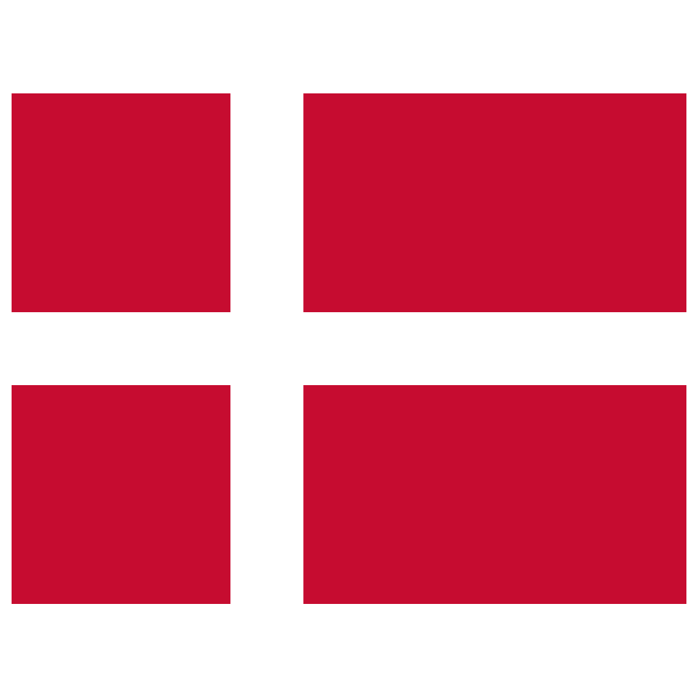

Hi, I'm Renas ッ

01 | Introduction
Hello, my name is Renas Kizilkaya. I am 22 years old. Right now I am studying IT-architecture at Erhvervsakademi København on Nørrebro. I have always been into technology since I was a little kid. The interest in technology is why I ended up picking this education. I am also big into gaming. Games like Tekken, Call of Duty, Skate 3, and GTA are something I find really enjoyable and like to play.
02 | What I'm interested in
- Networking: My interest in networking started a few years ago. I have always been fascinated by how different devices on a network communicate with each other using different types of protocols
- Cybersecurity: I'm into both offensive security (finding and exploiting weaknesses) and defensive security (protecting systems against them)
- Embedded systems: My interest in embedded systems started from being curious about how software can interact with physical hardware. I find it interesting how small devices like microcontrollers can be programmed to control different components and perform specific tasks. I enjoy experimenting with different components and learning how hardware and software work together
- Microcontrollers: I really enjoy working with microcontrollers and creating my own projects from scratch. It's fun to experiment with different components, such as an ESP32, and see how they can be combined to create something that actually works
- Drones: I have always been interested in drones and own a few myself. I really enjoy flying them and taking photos and videos whenever I travel
03 | Educations
-
Strandgårdskole, Ishøj
2013 – 2021
I started at Strandgårdskole in Ishøj in 3rd grade and stayed there until 9th grade.
-
Sydkysten Gymnasium – STX, Ishøj
2021 – 2024
I went to Sydkysten Gymnasium (STX) where I had Social Studies A and English A.
-
IT-architecture, Erhvervsakademi København
2026 – Present
I am right now studying IT-architecture at Erhvervsakademi København on Nørrebro.
04 | Jobs
-
Netto, Hundige
My first job was at Netto in Hundige when I was 15. I mainly worked on organizing the shelves, restocking products, and helping out at the register when it got busy. It was my first experience working in a real job, and I learned a lot from it.
-
IKEA, Høje Taastrup (Temporary position)
I have also worked at IKEA. There, I mostly kept an eye on the stock, both in the warehouse and on the shelves. I also helped customers find what they were looking for and made sure the department was kept organized.
-
Thansen, Brøndby (Seasonal position)
I have previously worked at Thansen in Brøndby as a seasonal fireworks employee. My main tasks were handing out the fireworks that customers had purchased and making sure the containers were kept stocked with new fireworks. I also had other responsibilities related to the work and making sure everything ran smoothly.
-
Bauhaus, Ishøj & Valby (Temporary position, 8 months)
I worked as a salesperson in the garden department at Bauhaus, at both the Ishøj and Valby stores. My main job was helping customers find the right products and giving advice based on their needs. I also often helped out in other departments, such as plumbing and lighting, whenever needed. Besides working with customers, I handled Click & Collect orders and made sure they were processed quickly and correctly. I also dealt with customer complaints, where I focused on finding a good solution and making sure the customer had a positive experience.
05 | Side projects
-
EducaBoard
EducaBoard is a kind of board you can program to handle different kinds of tasks. I used an IDE called Thonny to work on it. On the board itself I installed things like an ESP32, LEDs, diodes, transistors, and a bunch of other components.